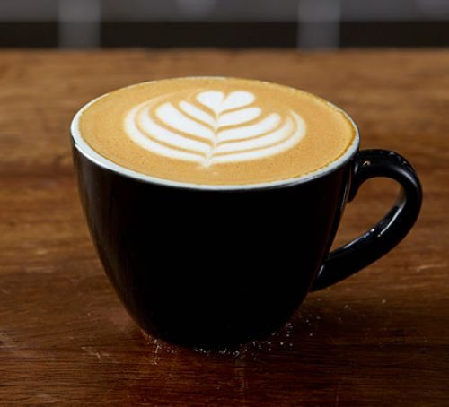
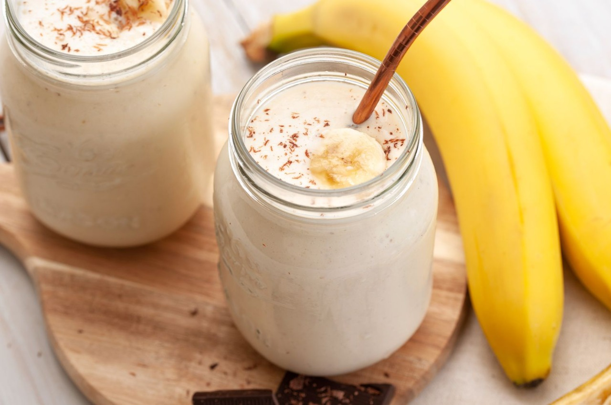
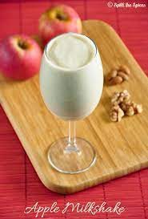
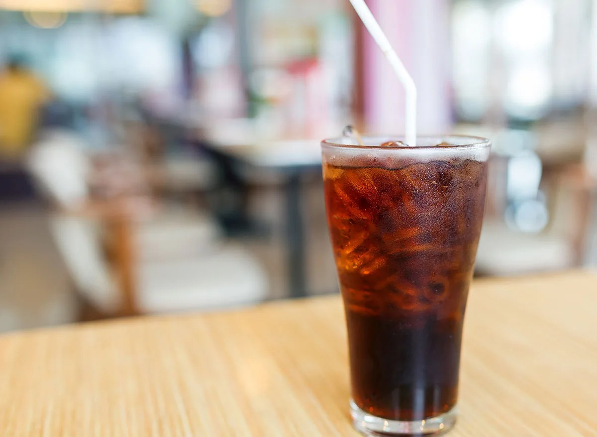

Tea
Tea is an aromatic beverage commonly prepared by pouring hot or boiling water over cured leaves of the Camellia sinensis, an evergreen shrub native to East Asia. After water, it is the most widely consumed drink in the world.
Coffee
Coffee is a brewed drink prepared from roasted coffee beans, the seeds of berries from certain Coffea species. The genus Coffea is native to tropical Africa and Madagascar, the Comoros, Mauritius, and Réunion in the Indian Ocean.
Banana Shake
A banana shake is a milkshake made with bananas. It is a popular drink in the United States and the United Kingdom, often served in fast food restaurants and cafés.
Apple Shake
An apple shake is a milkshake made with apples. It is commonly served in fast food restaurants and cafés in both the United States and the United Kingdom.
Coke
Coca-Cola is a carbonated soft drink manufactured by The Coca-Cola Company. Originally intended as a patent medicine, it was invented in the late 19th century and became a globally popular drink, dominating the soft-drink market.